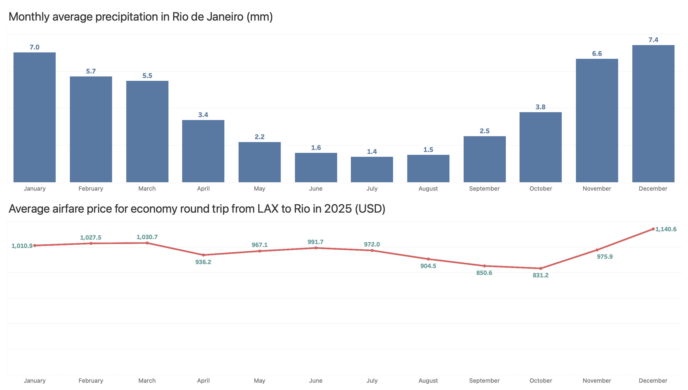

Tableau: dashboard with two charts
For this first lab, you will create a dashboard with two charts, a vertical bar chart and a line chart, just like the one below:

The instructions this week are not exactly as detailed as last week.
I suggest you don’t leave the lab before you finish it.
If you need any help, please let me know.
Create a new document
-
Start by downloading this zip file and extracting the CSV file from it.
-
Create a new document in Tableau Public and upload the
Rio daily precipitation.csvfile.
First chart
-
Create a new Calculated Field. You will use the formula
DATEPARSE("format", value), where the format is theMM-dd(for month and day) and the valeu is the tableMonth Day. Name this calculated fieldMonths. -
Make months the x‑axis and the average precipitation as the y‑axis.
-
Make sure you have it as a bar chart and don’t forget to include the labels on the top of each bar. Set the labels in Tableau Bold, 10pt, blue.
-
You may hide the Header on the left of the chart.
Second chart
-
Add a New Data Source and upload the other
LAX Rio airfare.csvfile. -
Create a New Worksheet. On this new sheet, select the LAX Rio airfare database.
-
Make months the x‑axis and the average price as the y‑axis.
-
Make sure you have it as a line chart and don’t forget to include the labels for the prices.
-
Change the line to red.
-
Set the labels in Tableau Bold, 9pt, teal.
-
You may hide the Header on the left of the chart.
Dashboard
-
Create a New Dashboard and change its size to 1400px × 800px.
-
Add Sheet 1 to the top and Sheet 2 to the bottom of the dashboard.
-
Tableau will add the control for years on the top right. You may delete it.
-
You may hide the Field Labels for Columns for both graphs too.
-
Edit the title of the first graph as Monthly average precipitation in Rio de Janeiro (mm). Set the type to Tableau Book, 18pt.
-
Edit the title of the second graph as Average airfare price for economy round trip from LAX to Rio in 2025 (USD). Set the type to Tableau Book, 18pt.
Visualize and share your dashboard
-
Click on the × next to your name on the top‑right of the page.
-
Click the Share button.
-
Click on the Copy Link button.
-
Paste the link on a new tab of your browser.
-
Copy the new URL from the address bar on the browser. (That’s the URL you need to submit on Canvas.)
Submission
Submit the second URL to Canvas.